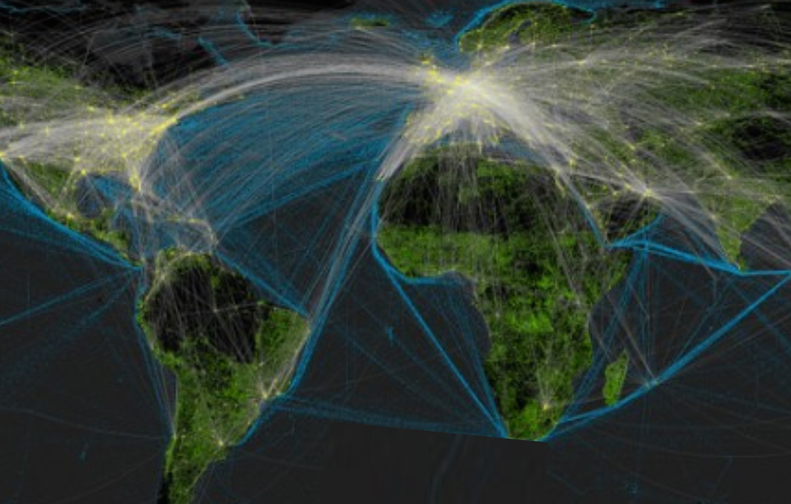

Animated State Dep't Cable Network Over Time
- By default show all messages leaving State (i.e. DC), but allow user to filter for other embassies by clicking on country.
- Animate chosen embassy throughout 40-year timespan to show change in communication patterns over time
Shh: Patterns of Cable Classification Over Time
- Stacked-to-100% bar chart
- Bucketed by year -> ~40 small buckets to show continuity while respecting discrete data
- When bar is selected, year is shown and horizontal bars below change to reflect that year
Cable Exploration: Geographic & Topical
- Choropleth colored according to relative density of cables sent from that embassy during the time period
- Brushing to allow filtering of specific spans up to 5 years
- Ability to zoom
- When user clicks on a country, acts as filter on treemap below (State displayed in treemap by default)
- Will be populated using LDA topic modeling of ~100 distinct topics, associating each cable with its 3 most common topics
- Topics will be aggregated thematically, allow user to 'click into' to get to core topics